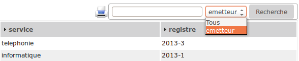
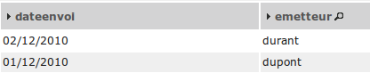

Personnaliser son application¶
Nous allons maintenant personnaliser notre application.
Pour ce faire, nous allons saisir un jeu de données.
Vous pouvez le faire avec les formulaires, l’incrémentation des séquences étant faite par le framework. Tout comme la création des tables stockant les séquences (méthode setId des objets metier).
Sinon exécutez la requête PostgreSQL suivante :
-- création des tables de séquence déjà faite
-- Selection du schéma
SET search_path TO framework_openmairie;
-- insertion de deux émetteurs avec récupération et incrémentation de la table de séquences
INSERT INTO emetteur (emetteur, nom, prenom) VALUES
(nextval('emetteur_seq'), 'dupont', 'pierre'),
(nextval('emetteur_seq'), 'durant', 'jacques');
-- insertion de deux services avec récupération et incrémentation de la table de séquences
INSERT INTO service (service, libelle) VALUES
(nextval('service_seq'), 'informatique'),
(nextval('service_seq'), 'telephonie');
-- insertion de deux courriers avec récupération et incrémentation de la table de séquences
INSERT INTO courrier (courrier, dateenvoi, objetcourrier, emetteur, service) VALUES
(nextval('courrier_seq'), '2010-12-01', 'Proposition de fourniture de service', 1, 1),
(nextval('courrier_seq'), '2010-12-02', 'Envoi de devis pour formation openMairie', 2, 1);
Faire un affichage courrier plus convivial¶
L’affichage des courriers se fait avec des libellés générés automatiquement.
Ainsi dans le fichier gen/sql/pgsql/courrier.inc.php (qui est inclus dans le fichier sql/pgsql/courrier.inc.php que vous pourrez modifier) vous avez la variable $champAffiche.
Vu que ce fichier a été créé par le générateur (et est en lecture seule) et vu que nous souhaitons modifier la variable (pour par exemple avoir le nom et le prénom de l’emetteur au lieu de simplement son nom) il nous faut ouvrir le fichier sql/pgsql/courrier.inc.php où nous allons (après l”include!) réaffecter à la variable $champAffiche la valeur suivante :
$champAffiche = array(
'courrier.courrier as "'._("courrier").'"',
'to_char(courrier.dateenvoi ,\'DD/MM/YYYY\') as "'._("dateenvoi").'"',
'concat(emetteur.nom,\' \',emetteur.prenom) as "'._("emetteur").'"',
'service.libelle as "'._("service").'"',
);
Il est possible que l’opération vous soit refusée (seul www-data ayant les droits d’écriture).
Si tel est le cas, il faudra se rajouter les permissions.
Vous pouvez le faire manuellement en faisant click droit->Propriétés sur le fichier gen/sql/pgsql/courrier.inc.php
Le résultat est le suivant :
Courrier Dateenvoi Emetteur Service
1 01/12/2010 dupont pierre informatique
2 02/12/2010 durant jacques informatique
De la même manière, toujours dans le même fichier, vous pouvez changer les options de la zone de recherche en réaffectant la variable $champRecherche. Actuellement on peut, en plus de Tous, faire une recherche sur courrier, emetteur et service.
C’est parce qu’à l’orgine, dans le fichier généré, $champRecherche avait été affectée comme telle :
$champRecherche = array(
'courrier.courrier as "'._("courrier").'"',
'emetteur.nom as "'._("emetteur").'"',
'service.libelle as "'._("service").'"',
);
Supprimer un ou plusieurs élément(s) du tableau et il disparaîtra de la zone de recherche. Par exemple…
$champRecherche = array(
'emetteur.nom as "'._("emetteur").'"',
);
…donnera :
Nous souhaitons maintenant avoir les derniers courriers au début de la page affichée. Nous n’avons pas besoin d’aller réécrire la requête, il existe une variable texte comprenant l’instruction de tri. Réaffectez cette variable $tri dans votre courrier.inc.php de la manière suivante :
$tri= " order by dateenvoi desc";
Le résultat est le suivant :
Pour en savoir plus sur ces variables voir : Configuration.
Rendre obligatoire des champs¶
Nous avons affiché le courrier avec une jointure de type LEFT JOIN ce qui ne rend pas obligatoire la saisie de l’emetteur et du service (auquel le courrier est affecté).
Nous devons surcharger la méthode verifier().
Dans obj/courrier.class.php la méthode à insérer après le constructeur est celle-ci :
function verifier($val,&$db,$DEBUG) {
parent::verifier($val,$db,$DEBUG);
// Les champs service et emetteur sont obligatoires
if ($this->valF['service']==""){
$this->correct=False;
$this->addToMessage(_('service')." "._('obligatoire')." !");
//
}
if ($this->valF['emetteur']==""){
$this->correct=False;
$this->addToMessage(_('emetteur')." "._('obligatoire')." !");
}
}
Par défaut le premier champ (ici dateenvoi) est obligatoire, cette option est modifiable dans le générateur.
La commande parent::verifier($val,$db,$DEBUG) permet de ne pas neutraliser la fonction surchargée (ici dans gen/obj/courrier.class.php)
Pour plus d’informations voir framework/methode.
Valoriser un champ par défaut¶
Pour simplifier la saisie, nous souhaitons mettre la date du jour dans le champ dateenvoi lors d’un ajout de courrier.
Nous allons surcharger la methode setVal() dans obj/courrier.class.php de la manière suivante :
function setVal(&$form, $maj, $validation, &$db, $DEBUG=null){
parent::setVal($form, $maj, $validation, $db, $DEBUG=null);
if ($validation==0) {
if ($maj == 0){
$form->setVal("dateenvoi", date('Y-m-d'));
}
}
}
Le champ dateenvoi contiendra la date système (date(“Y_m-d”)) si la validation est égale à 0 (ce qui signifie que le formulaire n’a pas été validé) et si $maj est égal à 0 (ce qui signifie qu’il s’agit d’un ajout).
Les autres valeurs que peut prendre $maj sont :
- 1 : modifier
- 2 : supprimer
- 3 : consulter
Mettre en majuscule un champ¶
Nous souhaitons maintenant mettre en majuscule le champ nom de la table emetteur.
Nous allons surcharger la méthode setOnchange() dans obj/emetteur.class.php de la manière suivante :
function setOnchange(&$form,$maj){
parent::setOnchange($form,$maj);
$form->setOnchange("nom","this.value=this.value.toUpperCase()");
}
A la saisie ou à la modification du nom, le champ se mettra en majuscule.
Principe à retenir¶
Voila quelques exemples des possibilités de modification dans les fichiers sql (répertoire sql/…) et dans les méthodes de l’objet (repertoire obj/…).
En aucun cas il ne faut modifier les fichiers dans gen/ qui est l’espace de travail propre au générateur.
Nous allons dans le prochain chapitre modifier la base et regénérer les écrans sans mettre en danger votre personnalisation.